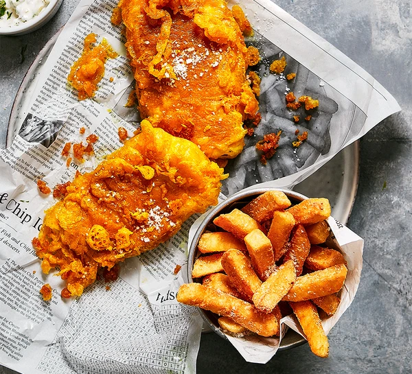

Fish & Chips
Odin's Recipes

Skip the takeaway, and spend a little effort perfecting fish & chips at home
- you'll be rewarded with crisp, deeply golden fish and moreish chips
Fish & Chips
Ingredients
- about 1 litre sunflower oil, for frying
- 2 thick skinless fillets of whiting, ling, pollock, haddock or cod (about 150g each)
- 2 large Maris Piper potatoes
- 1 tsp malt vinegar, plus extra to serve
- 75g self-raising flour, plus extra for dusting
- 25g cornflour
- small pinch of ground turmeric
- 125g cold lager or fizzy water
- 4 cornichons
- 1 tsp capers
- 1 shallot
- handful of parsley leaves, chopped
- 5 tbsp mayonnaise
Directions
- Cut the potatoes into chips and soak in cold water for 5 mins, then wash until the water runs clear. Tip into a pan of cold water with a pinch of salt and 1 tsp vinegar. Bring to a simmer, then turn down the heat and simmer gently for 10-12 mins until cooked through but not falling apart. Drain gently, then place on a tray in a single layer and chill until needed. Can be prepared a day ahead.
- To make the tartare sauce, chop the cornichons, capers and shallot (finely chop if you prefer a smooth sauce), then combine with the parsley, mayo and a pinch of salt. Will keep chilled for up to 24 hours.
- When you're ready to fry, prepare the batter. Tip the flours and turmeric into a bowl with a pinch of salt, pour over the beer or fizzy water, and mix quickly until everything just comes together to the consistency of double cream – do not over-beat, a few lumps are fine. Keep chilled.
- Pour the oil into a deep, wide pan like a wok, or heat a deep-fat fryer to 180C. If using a pan or wok, ensure that it is no more than two-thirds full with oil. Heat the oil until it is shimmering and carefully lower in the chips using a slotted spoon. Fry for 8-10 mins, gently stirring occasionally until golden and crisp. Transfer to kitchen paper to drain.
- Put a little flour in a dish, then bring the oil you used to cook the chips up to 185C, if you have a thermometer, or until a drizzle of batter sizzles and crisps in less than a minute. Working quickly, dust the fish in flour, then dredge through the batter. Hold the fillet above the batter to let the excess drip back into the bowl, then carefully lower into the oil. Fry the fillets for a minute until the batter is just starting to set, then take a spoon and drizzle the fillets with extra batter to create an even crunchier, wispy coating. Fry the fish for about 4 mins, turning once, until deep golden and crisp. Lift onto some kitchen paper to drain for a minute, then serve with the chips, tartare sauce, and plenty of salt and vinegar.